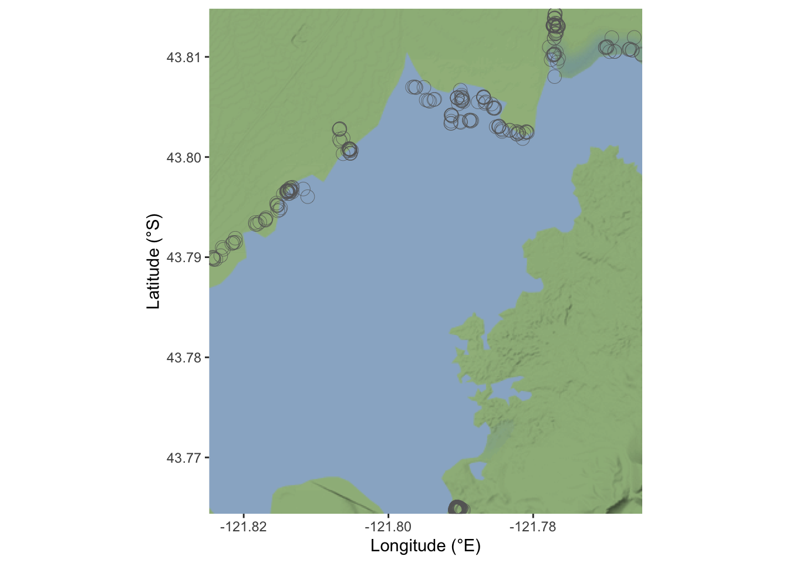
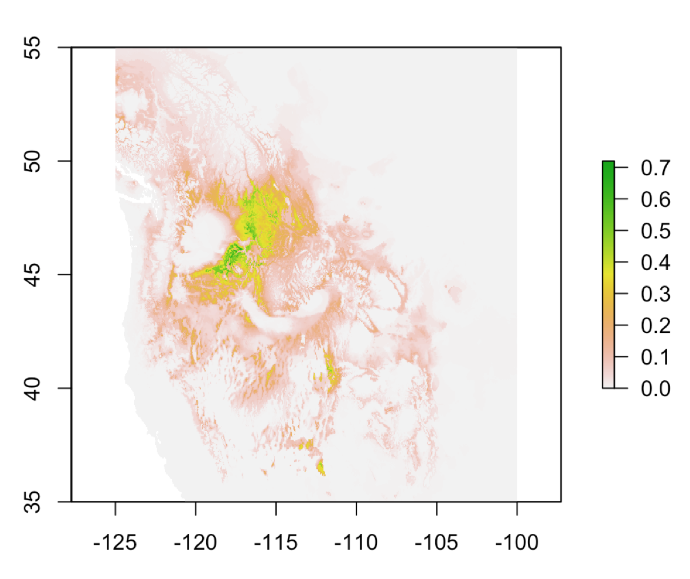

2 Case study 1: Rana Pretiosa
The first case study is about animal ecology, we will be looking at a frog particular specie Rana Pretiosa, scientific name Rana pretiosa Baird & Girard, 1853, and use some interesting data from Oregon as well as downloading more data from GBIF | Global Biodiversity Information Facility.
The scope is to visualize the presence of these nice little frogs across different location with making a map using ggplot2 by Hadley Wickham.
2.0.1 Get started making a map!
The first map that we make is a general frog location map of the United States. In this case we need the spocc package by Hannah Owens and Vijay Barve and Scott Chamberlain, to load the data from GBIF and make the map.
load("data/case_study_1.RData")The first step we use the occ {spocc} function. It searches for species occurrence data across many data sources, in this case from GBIF.
do_gbif <- occ("Rana pretiosa Baird & Girard, 1853",
from = "gbif",
limit = 1000,
has_coords = TRUE
)
do_gbif1 <- data.frame(do_gbif$gbif$data)states <- map_data("state")
oregon <- states %>% filter(region == "oregon")
ggplot(data = states, mapping = aes(long, lat, group = group)) +
geom_polygon(color = "grey", fill = NA) +
geom_polygon(
data = oregon,
inherit.aes = TRUE,
color = "pink",
fill = "pink"
) +
geom_point(
data = do_gbif2,
mapping = aes(x = longitude, y = latitude),
inherit.aes = FALSE,
alpha = 0.5,
size = 0.5
) +
coord_map() +
theme_bw()
Once visualized, we will be making some assumptions about their movement and habitat use based on the results of a study by Dr. Michael J Adams from the Forest and Rangeland Ecosystem Science Center in Oregon.
More information about this study can be found here: Late-Season Movement and Habitat Use by Oregon Spotted Frog (Rana pretiosa) in a Large Reservoir in Oregon, USA
The dataset has been released for #TidyTuesday 2022 week 31 and can be downloaded here: oregonfrogs
Or, you can install the package from github: https://github.com/Fgazzelloni/oregonfrogs

# install.packages("remotes")
remotes::install_github("fgazzelloni/oregonfrogs")One of the most important step of spatial modeling, and modeling in general, is to have a good knowledge of the argument. So, the more we know about Rana Pretiosa the better!
Let’s hear Rana Pretiosa sound hear call: https://amphibiaweb.org/species/5131
More information about Rana pretiosa can be found here:
In particular, we will be looking at the location where rana pretiosa has been located with the use of radio telemetry frequencies in the Crane Prairie Reservoir, which is a man-made lake located about 42 miles (68 km) southwest of Bend in Deschutes County, Oregon, United States.1
An interesting map of the lake with related data can be found here: Lake and Reservoir in Deschutes County in Oregon map data
We will require more packages while performing our analysis.
Let’s have a look at the data, we have 311 observations and 16 variables which include the habitat type, the date, the radio frequency, and other variables such as gender, type of water, presence of beavers, and if they are captured, located or just visualized.
So, many interesting hypothesis can be done about their movements habitat use.
Disclaimer: Load the oregonfrogs_raw data, which contains the variables that we use for spatial data manipulation, then rename it to oregonfrogs. In the updates of the package you’ll find this as a new set already fitted with the new variables.
oregonfrogs <- oregonfrogs::oregonfrogs_raw
oregonfrogs %>% head(3)# A tibble: 3 × 16
Site Subsite HabType Surve…¹ Ordinal Frequ…² UTME_83 UTMN_83 Inter…³ Female
<chr> <chr> <chr> <chr> <dbl> <dbl> <dbl> <dbl> <dbl> <dbl>
1 Crane … SE Pond Pond 9/25/2… 268 164. 597369 4846486 0 0
2 Crane … SE Pond Pond 10/2/2… 275 164. 597352 4846487 1 0
3 Crane … SE Pond Pond 10/9/2… 282 164. 597345 4846458 2 0
# … with 6 more variables: Water <chr>, Type <chr>, Structure <chr>,
# Substrate <chr>, Beaver <chr>, Detection <chr>, and abbreviated variable
# names ¹SurveyDate, ²Frequency, ³IntervalOne more interesting information is about the location, in this case a UTM distance (from the Equator or from the North) is provided, and this type of localization is the most suitable for animal location.
The Universal Transverse Mercator (UTM) is a common projection is which preserves local angles and shapes, and divides the Earth into 60 zones of 6 degrees of longitude in width. Each of the zones uses a transverse Mercator projection that maps a region of large north-south extent. 2
Interesting is that it is expressed in meters, so it gives more opportunity in case one wants to consider the distance. For now, we transform these UTM projections into longitude and latitude. For doing this we need the sf package by Edzer Pebesma.
Many are the GIS packages available in R to use, and sometime is difficult to make a choice as they are all very useful and interesting.
To transform the UTM values into long and lat we use the sf::st_as_sf() function with some arguments which are compulsory for what we do.
We need to specify where the coordinates are located in our set, and set a CRS or coordinate reference system information.
# Build a tibble with the geo-location information
frogs_coord <- oregonfrogs %>%
dplyr::select(UTME_83, UTMN_83)
# Tranform it to lat and long
frogs_coord <-
frogs_coord %>%
# transform to simple features as geometry
sf::st_as_sf(coords = c(1, 2),
crs = "+proj=utm +zone=10") %>%
# utm tranformation to longlat
sf::st_transform(crs = "+proj=longlat +datum=WGS84") %>%
tibble()
frogs_coord %>% head(3)# A tibble: 3 × 1
geometry
<POINT [°]>
1 (-121.7903 43.76502)
2 (-121.7905 43.76503)
3 (-121.7906 43.76477)As you can see the first projection points to utm as the type of data provided and set the zone 10. While the second transformation applies to longlat types projection on WGS84, (World Geodetic System 1984, known as EPSG:4326), which express the degree of longitude and latitude starting from a particular point of view, in this case EPSG:4326.

All the available CRS in R can be seen by typing View(rgdal::make_EPSG()) 3
library(purrr)
frogs_location <- tibble(
Detection = oregonfrogs$Detection,
Subsite = oregonfrogs$Subsite,
Frequency = oregonfrogs$Frequency,
lat = unlist(map(frogs_coord$geometry, 2)),
long = unlist(map(frogs_coord$geometry, 1))
)
frogs_location %>% head(3)# A tibble: 3 × 5
Detection Subsite Frequency lat long
<chr> <chr> <dbl> <dbl> <dbl>
1 Captured SE Pond 164. 43.8 -122.
2 No visual SE Pond 164. 43.8 -122.
3 No visual SE Pond 164. 43.8 -122.2.1 Look at oregonfrogs data
Let’s have a first sight at the data based on location. The first thing to notice is that points (frogs) are aligned following some sort of linearity. But, what is the difference from other data, is that now these points are following an environment. Let’s have a look at it.
ggplot(data = frogs_location, aes(x = long, y = lat)) +
geom_point() +
geom_smooth(method = "loess") +
theme_bw()
2.1.1 Let’s map the lake!
How do we set the map for the location of our Rana Pretiosa in the Crane Prairie Reservoir?
In the study page we can find the BOX, the box is the four corner reference points, bounding our interested area.
Bounding Box: https://www.sciencebase.gov/catalog/item/imap/60ba5a00d34e86b9388d86bc
Bounding Box[-121.824775, 43.764375, -121.764923, 43.814821]
This is how to retrieve the base map and locate the frogs; we use the ggmap and ggplot2 for the frogs locations.
box=c(43.764375,-121.824775,43.814821,-121.764923)
crane_reservoir <- get_stamenmap(bbox = c(left = -121.824775,
bottom = 43.764375,
right = -121.764923,
top = 43.814821),
zoom = 13, color = c("color"),
maptype = "terrain-background")base_map <- ggmap(crane_reservoir) +
geom_point(
data = frogs_location,
aes(x = long, y = lat),
shape = 21,
stroke = 0.2,
size = 4,
color = "grey40"
) +
xlab("Longitude (°E)") + ylab("Latitude (°S)")
base_map
2.2 Time as coordinate
With a little modification of the dataset we can visualize the frogs by months. This study has been carried from mid September 2018 to late November of the same year, so three months of observations.
base_map +
geom_sf(data = frogs_location_tm,
aes(col = factor(month), geometry = geometry),
inherit.aes = F) +
facet_wrap(~ cut(time, "1 months")) +
scale_color_discrete(labels = c("September", "October", "November")) +
labs(color = "Month") +
theme_void()Some speculation could be done about the reasons why the frogs are not located in some substrates of the lake in September more than in November.
2.3 Make a grid
Let’s create a grid of points around the frogs’ locations. In order to do that we need the sf package, initially we do the same as before, but now we want a Simple feature collection of points and not a tibble with coordinates as before. The functions sf::st_make_grid() and sf::st_as_sfc(sf::st_bbox(points)) with the bbox reference for the points let us create a grid.
# make a grid
frogs_coord_freq <-
tibble(oregonfrogs$UTME_83,
oregonfrogs$UTMN_83,
oregonfrogs$Frequency)
points <- sf::st_as_sf(x = frogs_coord_freq,
coords = c(1, 2),
crs = "+proj=utm +zone=10") %>%
sf::st_transform(frogs_coord,
crs = "+proj=longlat +datum=WGS84") grid = sf::st_make_grid(
sf::st_as_sfc(sf::st_bbox(points)),
what = "centers",
cellsize = .002,
square = F
)ggplot() +
geom_sf(data = grid, size = 0.3) +
geom_sf(data = points) +
coord_sf() +
ggthemes::theme_map()What we do now is to group the frogs by date.
2.4 Work with Models
Packages functionality from rgeos,raster,rgdal,terra packages are included in sf,and dismo so we don’t need to load them.
Here we use wrld_simpl data from maptools, to be able to use the plot() function faster, you can install the package or load it because data is included in the /data folder as .RData format. We can load the data/case_study_1.RData to load all the data we need for this workshop, this is already been done at the very beginning of this chapter. In case you’d like to do that separately, just type: load("data/case_study_1.RData") and all data will be loaded in the global environment
world <- map_data("world")
gbi_coords <- tibble(x = do_gbif2$longitude, y = do_gbif2$latitude)
ggplot(world) +
geom_polygon(aes(long, lat, group = group),
fill = "grey90",
color = "grey30") +
geom_polygon(data = states,
aes(long, lat, group = group),
color = "grey40") +
geom_point(data = gbi_coords, aes(x, y),
color = "pink") +
coord_sf(xlim = c(-125, -90), ylim = c(35, 65)) +
ggthemes::theme_map()This is a raster stack composed of 19 raster layers.
frogs <- data.frame(long = do_gbif2$longitude,
lat = do_gbif2$latitude)
climate <-
dismo::getData("worldclim",
download = T,
var = "bio",
res = 2.5)
plot(climate, legend = false)
frog_climate <- extract(climate, frogs) bio1 bio2 bio3 bio4 bio5 bio6 bio7 bio8 bio9 bio10 bio11 bio12 bio13 bio14
[1,] 100 85 34 5669 237 -11 248 32 171 171 27 1737 248 53
[2,] 72 88 33 6123 220 -43 263 1 151 151 -4 1514 225 47
[3,] 59 83 35 5268 194 -40 234 1 127 129 -3 1731 258 49
bio15 bio16 bio17 bio18 bio19
[1,] 48 731 184 184 667
[2,] 50 656 161 161 599
[3,] 50 749 178 195 687Apply the Bioclim algorithm used for species distribution modeling, the classic climate-envelope-model. It computes the similarity of a location by comparing the values of environmental variables at any location to a percentile distribution of the values at known locations of occurrence. More info here: ?dismo::bioclim
We use the pairs(x, v=NULL, pa='pa', hist=TRUE, cor=TRUE) function to plot the results of the model, with options from the dismo package.
pairs(bioclim.mod, pa = "pa")
Now, let’s build a stack with the stack() function, including all the bioclimatic layers from the original raster stack.
doParallel::registerDoParallel()
predictors <- stack(
climate$bio1,
climate$bio2,
climate$bio3,
climate$bio4,
climate$bio5,
climate$bio6,
climate$bio7,
climate$bio8,
climate$bio9,
climate$bio10,
climate$bio11,
climate$bio12,
climate$bio13,
climate$bio14,
climate$bio15,
climate$bio16,
climate$bio17,
climate$bio18,
climate$bio19
)
predictions <- predict(predictors, bioclim.mod)